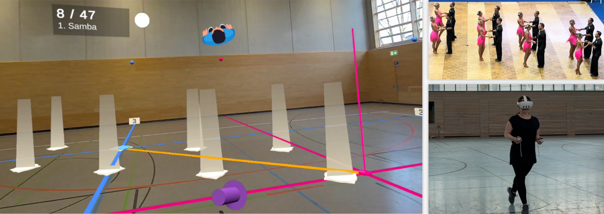

Formation DancAR: Facilitating Formation Dance Practice with Augmented Reality

(opens in new tab)
Venue. VINCI (2026)
Materials.
PDF(opens in new tab)
Abstract. Formation dancing is assessed regarding synchronicity and symmetry of formations. Accordingly, training and learning new choreographies require significant effort. We propose an augmented reality (AR) system to support the initial practice of formations and transitions for a new choreography. The system provides visual and auditory cues for positions, movement paths, timings, and body orientation, allowing dancers to train individually without teammates. To evaluate its effectiveness, we conducted two exploratory studies with a total of 15 formation dancers, comparing visual guidance methods for practicing transitions in a new choreography. The results showed that both AR position marker design packages were effective at guiding dancers through the formations and that participants perceived the gradual guidance reduction as supporting their learning. Further, participants found the approach valuable and considered it an effective addition to their training routines.
Link to this page: